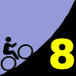
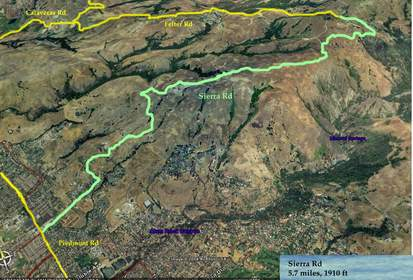

|  |
2007 Low-Key Hillclimbs Week 8: Sierra Road 17 Nov 2007 |
|  |
| Aerial photo of Sierra Road, courtesy of Stanford Cycling |
In the 2005 Tour of California, 76 miles into the 95 mile stage, Kohl, Landis, and Leipheimer crested the summit of Sierra Road in close to 19 minutes, a rate of altitude gain of 1760 meters per hour. Adjusting for the duration of the effort and the grade of the road, this corresponds to an OLH time of approximately 14 minutes even. Incredible.
While it's unlikely such speeds will be seen by the hill today, the challenge will be, if anything, greater. For more mortal legs, the slopes of Sierra Road demand lower gears, more tortured cadences, or both. This is a climb with its own special character The broad, residential slopes at the bottom confront you with 10+% grades which barely relent before the summit. But as the climb continues, with expansive view of the valley to the west, the houses are left behind, the road narrows and roughens as it continues steeply upward.
What names will you see on the roadway, paint faded by the spring and summer since February's race? Leipheimer? Hincapie? Bettini? England? Winterfield? Here's your chance to test yourself against them. Here's your chance to see how you measure. Sierra provides the testing grounds. All are welcome to attend.
Our insurance demands it: helmets are required. Sorry kids, no exceptions!
The start will be near the intersection of Sierra Road and Piedmont Road in San Jose. There is plenty of parking in this area. Or, take Caltrain! You have just enough time to get to the start from the first southbound train. Click here for riding directions from the Santa Clara station (basically the same distance as San Jose, but the train arrives there earlier).
| stats | 3.7 miles, 1825 ft, 9.3% |
| format | mass start |
| time | reg 9:15 - 10:00 start 10:10am |
| coordinator | |
| aerial view | Stanford Cycling #1 |
| route profile | Webcor Sierra KOM profile ACTC profile ACTC profile page |
| weather | Weather Underground Weather Bonk |
| registration form |
PDF release form |
| entry fee | $10 free for juniors 2 free for volunteers free for coordinators |

{kind=link}
{kind=link}